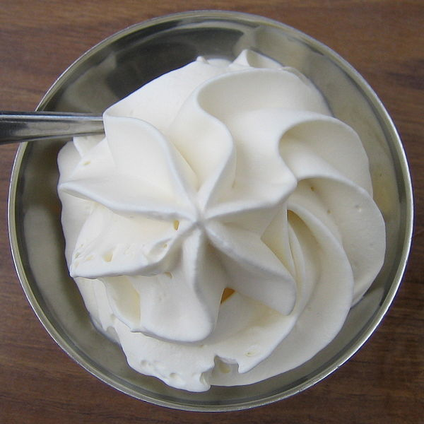

Le domaine de Chantilly
Le domaine de Chantilly est un site exceptionnel constitué notamment du Château, des Grandes Ecuries et de l’Hippodrome au cœur d’un massif forestier de plus de 6000 hectares qui offre aux visiteurs une richesse incomparable :
- Le Grand Château, qui a été reconstruit par le duc d’Aumale entre 1875 et 1885, présente aujourd’hui le Musée Condé, deuxième plus riche collection d’œuvres des écoles françaises et italiennes après le Louvre, ainsi que des collections de livres rares.
- Les Grandes Ecuries des princes de Condé sont le second fleuron du Domaine. Uniques au monde par leur taille, la qualité de leur architecture, la magnificence de leur décor et leur situation, elles ont été construites au XVIIIe siècle par l’architecte Jean Aubert, brillant élève de Hardouin-Mansart. Elles abritent depuis 1982, le Musée Vivant du Cheval.
- Le domaine offre aussi toute la richesse et la variété de l’art des jardins. Les grands parterres à la française de Le Nôtre, restaurés en 2009, côtoient un jardin anglo-chinois et un parc paysager à l’anglaise.
- Le hameau, niché au cœur du jardin anglo-chinois, aurait inspiré la reine Marie-Antoinette pour celui de Versailles.
Les Grandes Ecuries & le musée vivant du cheval
Le musée du Cheval est un musée et une salle de spectacle équestre situés dans les grandes écuries du château de Chantilly. Il a été ouvert au public en 1982 pour y accueillir le musée vivant du Cheval qui a été entièrement rénové en 2013. Ce musée destiné à tous les publics, raconte à travers plus de 200 objets et œuvres d’art, l’importance de la relation entre l'homme et le cheval depuis le début des civilisations et propose des animations équestres « vivantes », des présentations pédagogiques et des spectacles.
Hippodrome
Aménagé dans les années 1840 pour accueillir les courses hippiques nées en 1834 sur ce que l’on appelait à l’époque la "Pelouse", l’hippodrome de Chantilly constitue un élément essentiel du développement économique et urbain de Chantilly depuis le XIXe siècle. Bordé par les Grandes Ecuries, le château, la forêt et le quartier historique de Chantilly, l’hippodrome présente, outre ce cadre prestigieux, un sol souple qui fait sa réputation mondiale. Les tribunes construites dans les années 1880 sur des plans d’Honoré Daumet et inscrites au titre des monuments historiques. Elles ont été restaurées et modernisées au début des années 2000. Spécialisé depuis sa création dans la course de plat (le galop), l’hippodrome accueille chaque année depuis plus de 150 ans, deux des plus prestigieuses courses en Europe : le Prix du Jockey Club (premier week-end de juin) et le prix de Diane (troisième week-end de juin) et environ 40 réunions annuelles.
Le Potager des Princes
Le Potager des Princes est inscrit monument historique depuis 1975. Il est le renouveau de la faisanderie qui fut construite par le Grand Condé dans les jardins du Château de Chantilly. Grâce à de multiples recherches effectuées sur des plans des XVII, XVIII et XIXe siècles, Yves Bienaimé, assisté du jardinier en chef, Serge Saje, redonne à ce parc des perspectives disparues au fil du temps tout en lui conservant son esprit. Il offre aujourd’hui une nouvelle vocation au « Parc de la Faisanderie » en ouvrant au public « Le Potager des Princes ».
Le bois Bourillon
Le cimetière Bourillon fut ouvert en 1841 sur un terrain situé dans le bois cédé en 1840 à la ville par la reine Marie-Amélie, épouse de Louis-Philippe, mère du duc d’Aumale. Des noms de personnages illustres figurent sur les tombes : le général Bessières, l’épouse de Champollion ou encore Gustave Macon, grand historien de Chantilly. En entrant à droite, on peut trouver le carré des Anglais réservé aux lads, jockeys et entraîneurs établis à Chantilly dès les années 1840, et un peu plus loin, le carré des lanciers polonais. Ce cimetière mérite attention pour son intérêt historique, artistique (très beaux mausolées) ou parfois simplement anecdotique. Au fil des tombes, c’est l’histoire de la ville qui est concentrée en ces lieux.
Le Pavillon de Manse
Au bord de la Nonette, au cœur de Chantilly, le Pavillon de Manse a été construit à la fin du XVIIe siècle en 1678, par le prince de Condé et transformé au XIXe siècle par le duc d'Aumale.
- Le moulin du prince de Condé : au XVIIe siècle, époque où la ville n'existait pas encore, un magnifique parc dessiné par Le Nôtre s’étendait le long de la vallée. A l'ouest, il se terminait par le Pavillon de Manse (du nom de l’hydraulicien, Jacques de Manse, concepteur de la « machine ») bâti pour abriter une machine hydraulique en bois. Son rôle était d’élever l’eau de source d’un puits, vers un réservoir à ciel ouvert aujourd'hui en face de l'hippodrome pour de là, la distribuer aux bassins, fontaines, cascades et jets d’eau qui ornaient le jardin "des Grandes Eaux".
- Le moulin du duc d'Aumale : accolé au moulin du prince, sa première fonction fut de loger, en 1846, une pompe à balancier en remplacement de "la machine des Grandes Eaux". En 1876, s'ajouta une station de pompage plus moderne, destinée à alimenter en eau potable le Château et la ville. Un peu plus tard le duc d’Aumale, installa une blanchisserie, la plus moderne de l’époque.
Les Troglodytes
les troglodytes est un patrimoine très important pour la ville de Gouvieux. Issue des anciennes carrières de pierre et de champignonnière dans la région, ces maisons sont aujourd'hui en partie habitées et visitables.
Les vignes
La ville de Gouvieux possède des vignes qui produisent du vin blanc mousseux nommé « Perle de Gouvieux ». Ces vignes sont présentent depuis 1141 cependant, elles n'étaient plus exploités jusqu'à 2004 où une vendange qui a donnée naissance à la première récolte des « Coteaux de Gouvieux ».
Les Châteaux Godviciens
De nombreux châteaux son présent à gouvieux :
- Le château du Montvillargenne : il a été construit en 1900 par la baronne Jeanne Léonino de Rothschild. Aujourd'hui c'est un hôtel de luxe.
- Le château de la Tour : appartenant a l'origine a une riche famille de banquier il fut réquisitionner pendant la 2éme guerre mondiale puis transformée en 1946 en hôtel restaurant.
- Le château des Fontaines : en 1878, le Baron Nathan James Edouard de Rothschild achète le domaine, agrandit la propriété et lance la construction du château. Aujourd'hui c'est un centre de formation international.
Les canaux
Au cœur de Chantilly, court un vaste réseau complexe de canaux. Le grand Canal, le canal Saint-Jean, le canal de la Machine et le canal de Manse rappellent le système hydraulique imaginé par Le Nôtre et l’ingénieur Jacques de Manse pour alimenter en eau les jardins du château. Les bords des canaux constituent aujourd’hui un beau lieu de balade au cœur d’un environnement verdoyant. Il existe une visite guidée sur smartphone via l'application "Chantilly-Senlis autrement", avec de la réalité virtuelle sur les Canaux de Chantilly mais également des audios et des jeux... Vous découvrirez notamment la reconstitution des grands jeux d'eaux à l'époque des Princes de Condé ! Une visite à ne pas manquer. Renseignements auprès de l'office.
L'hippisme
Les activitées hippiques sont aussi très présentes à Gouvieux et Chantilly avec notamment la présence du centre d’entraînement des aigles à Gouvieux.
Il propose 120km de piste en sable et 1200 pur-sang s’entraîne quotidiennement. Ainsi les 2/3 des vainqueurs des cours hippique en France sont issue du site godvicien il n'a donc pas d'équivalent dans le monde.
Chantilly, quand à elle, est connue au niveau international pour ses activités hippiques qui, outre son hippodrome où se déroulent deux grandes courses hippiques tel que le Jockey Club ou le prix de Diane, abrite le plus grand centre d’entrainement de chevaux de courses de France.
La forêt de Chantilly
La forêt de Chantilly est un massif forestier de 6 344 hectares. Elle s’étend bien au-delà de la commune de Chantilly, sur le sud de l’Oise et le nord du Val-d’Oise. Elle forme avec la forêt d'Halatte et la forêt d'Ermenonville, le massif des Trois Forêts (19 000 ha). Elle fait partie du Domaine de Chantilly et à ce titre est site classé, propriété de l’Institut de France. Elle est gérée par l’O.N.F (Office National des Forêts) suivant un plan d’aménagement tenant compte des enjeux paysagers, forestiers, écologiques, patrimoniaux et touristiques de la forêt.
La dentelle & la porcelaine
La dentelle de Chantilly est réputée dans le monde entier. Cette dentelle de soie est généralement noire, rarement blanche. Elle s’exécute au fuseau. Dès le milieu du XVIIe siècle, la région Nord de Paris se spécialisait dans la fabrication des dentelles de soie. En 1830, l’industrie dentellière employait environ 4000 personnes dans le secteur de Chantilly (source Mlle Dugas in « Chantilly, dentelle et marchands »). A la fin du 18ème siècle, sous le 1er Empire, et jusque vers 1850, la dentelle de soie exécutée à Chantilly portait le nom de Blonde. » La Blonde » doit ce nom à la couleur de la soie issue du cocon du papillon, le Bombyx du mûrier. Cette soie est de teinte jaune pâle argentée et scintillante. Lorsque le fil se soie avait été teint en noir, la Blonde portait le nom de Blonde noire, La vogue des blondes noires et blanches dura jusque vers 1840 pour laisser la place à la dentelle noire que l’on appelle Chantilly et qui fut à son apogée sous Napoléon III.
L’épouse de celui-ci, l’Impératrice Eugénie de Montijo, d’origine espagnole, affectionnait les dentelles noires, dont elle lança la mode.
La ville a créé un musée municipal du patrimoine et de la dentelle qui rassemble de très belles pièces de collection : musée du Patrimoine de Chantilly.
La porcelaine de Chantilly est encore aujourd’hui une activité vivante qui s’inscrit dans la tradition de Chantilly. La porcelaine de Chantilly est née dans les années 1730 grâce à Louis-Henri de Bourbon, prince de Condé, qui décide de se lancer dans l’aventure. Toute d’élégance et de bon goût, la porcelaine de Chantilly se distingue d’emblée par son extrême raffinement et la qualité de sa pâte (mélange de sable d’Aumont et de potasse, de marbre citronné de Luzarches). La ligne simple s’inspire directement du style oriental qu’affectionne le prince et qui contraste avec les productions chargées de l’époque. C’est l’apogée du style « Kakiémon » et de son décor polychrome. Après la mort du prince (1760/1800), la porcelaine de Chantilly évolue et revient à des tendances plus classiques avec le décor à la « brindille » et à « l’oeillet », en camaïeu de bleu. Mais le 19ème siècle sera fatal à la porcelaine de Chantilly.
Depuis quelques années, elle revit notamment grâce à la réouverture d’une nouvelle boutique atelier où ne sont vendus que des articles peints à la main et où il est possible de voir travailler des peintres sur porcelaine.
La crème Chantilly
C’est certainement grâce à elle que Chantilly est connue dans le monde entier puisque partout, on consomme avec plaisir cette délicieuse composition à l’origine bien mystérieuse. Selon la légende, la crème Chantilly est née d’un incident de cuisine. Lors d’un repas, la crème fraîche aurait manqué, alors un marmiton aurait eu l’idée de la fouetter pour en augmenter le volume et servir tous les invités.
Les maisons des Officiers
Construites dans le prolongement des grandes écuries le long de la Pelouse, les maisons des Officiers représentent l’ensemble architectural le plus remarquable de la ville. A la fin des années 1720, dans sa volonté de donner une unité globale à la ville, le duc de Bourbon concéda à bas prix des terrains aux officiers civils travaillant à son service, à charge pour eux de faire construire une habitation suivant des plans et des directives architecturales précises conçues par le prince et son architecte Aubert. Si la partie donnant sur la pelouse était réservée à l’officier et sa famille, celui-ci pouvait faire construire des bâtiments de rapport autour d’une avant cour coté rue du Connétable et les louer à des hôteliers et artisans. C’est ainsi que naquit la vocation commerçante de la rue du Connétable alors appelée Grande Rue. Aujourd’hui, ces maisons forment un alignement harmonieux de magnifiques hôtels particuliers avec leurs jardins donnant sur l’allée des officiers et l’hippodrome.